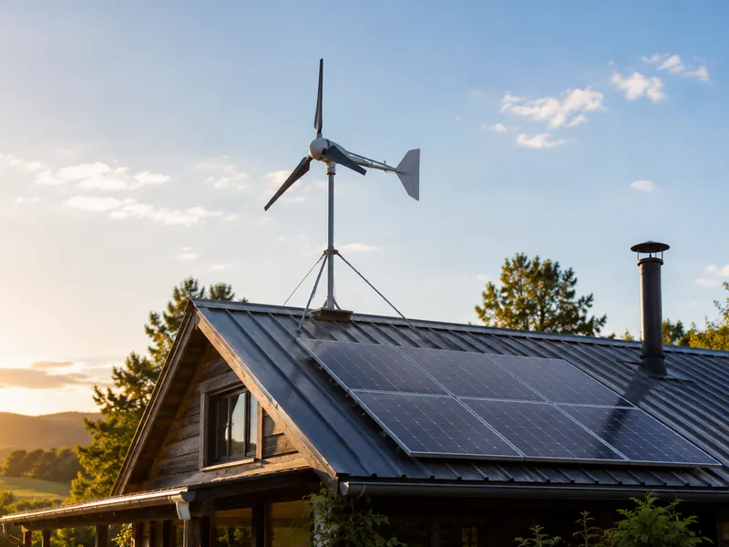
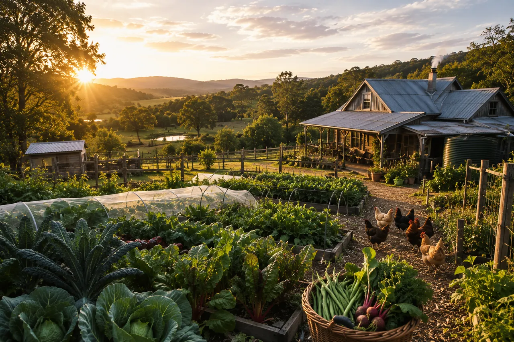
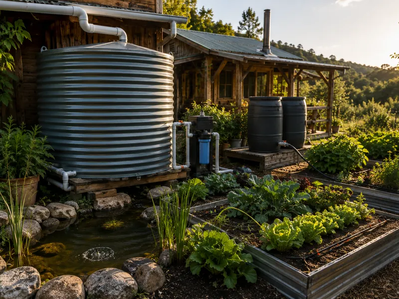
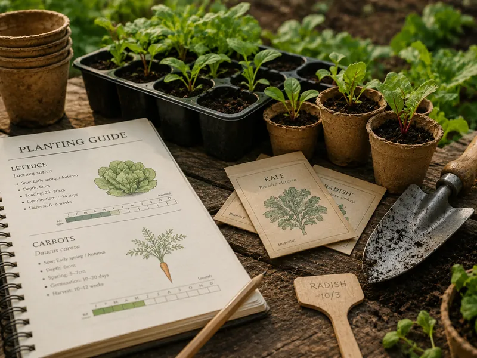
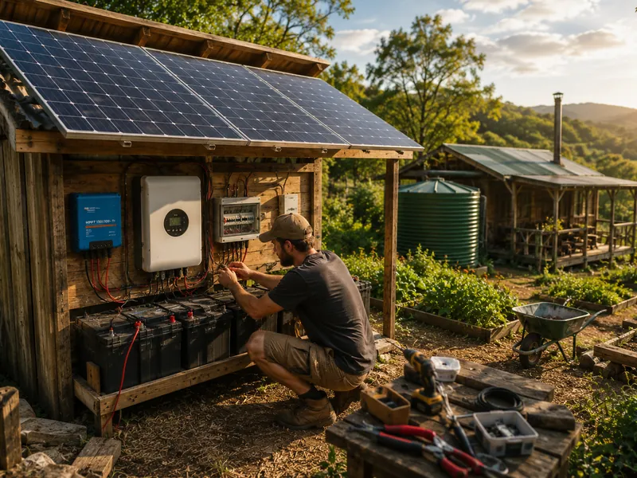
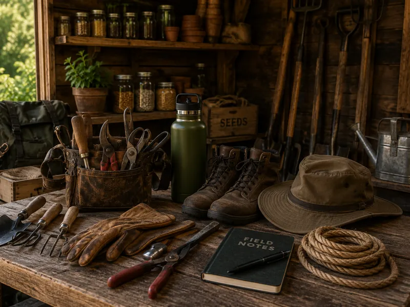

Solar Power Systems
From a simple 100W van setup to full whole-home off-grid systems. Panel selection, battery banks, charge controllers, and inverters explained.
Explore Solar
Practical, sourced guides for planning a more self-reliant home: off-grid solar, water supply, food growing and preservation, and small buildings, with the formulas and checks that prevent expensive mistakes.
This is not a lifestyle blog. This site exists to help you:
Calculate your power consumption, water usage, and food requirements before buying anything.
Power Audit Guide →Solar panels, batteries, and inverters — sized correctly for your actual load.
Solar Guide →Rainwater collection, gravity-fed systems, and filtration that doesn’t fail.
Water Systems →Productive gardens, food preservation, and foraging to reduce dependency on outside supply.
Food & Farming →
From a simple 100W van setup to full whole-home off-grid systems. Panel selection, battery banks, charge controllers, and inverters explained.
Explore Solar
Rainwater catchment, gravity-fed distribution, well drilling basics, and filtration that reliably produces safe drinking water.
Explore Water
High-yield vegetable gardens, food preservation (canning, fermenting, dehydrating), chickens, foraging, and root cellars.
Explore Food
Tiny cabins, earthbag homes, cob construction, and simple DIY structures you can build yourself with minimal experience.
Explore Building
Honest reviews of the tools, gadgets, and equipment that actually make off-grid life easier, and the ones that don’t.
Browse ReviewsCommon off-grid power options at a glance. Prices are approximate and change often; check the current listing. Compare any option with your own power audit.
| Kit / Brand | Wattage | Battery | Best For | Approx. Price | Check Before Buying |
|---|---|---|---|---|---|
| Renogy 200W Starter | 200W | Not included | Vans, tiny cabins | Varies | Controller type and whether it suits your battery |
| Jackery Explorer 1000 Pro | 1,000W AC output | 1002Wh built-in | Camping, temporary off-grid | Varies | Capacity and output limit against your audit |
| Bluetti AC200P | Up to 700W | 2000Wh built-in | Small homes, overlanding | Varies | Surge rating for motor loads; solar input limit |
| Victron Energy System | Scalable | LiFePO4 recommended | Full home off-grid | Depends on design | Needs a full design, protection and installation plan |
| ECO-WORTHY 400W | 400W | Not included | Budget homesteaders | Varies | Controller type, cable length and warranty terms |
View all buying guides · Size your own system with the workbook
Product guides covering specifications, limitations and off-grid uses. Affiliate links are disclosed.
An entry-level panel kit. Check which charge controller it ships with, the included cable lengths and what else you need to buy.
Buying guide: Check controller and cables
Read Buying GuideA gravity-fed countertop system. Check the installed element, its specific treatment claims and its suitability for your source water before buying.
Buying guide: Check source suitability
Read Buying GuideA portable power station. Compare its usable capacity, output limit and recharge options with your load audit before relying on it.
Buying guide: Check capacity against your loads
Read Buying GuideA large-capacity food dehydrator. Check tray count, temperature range, power draw and warranty, and follow tested drying guidance for each food.
Buying guide: Check capacity and power use
Read Buying GuideSite and utility planning, scoped budgets and checks before committing to land or occupancy.
Read Guide →A simple calculator and methodology for figuring out exactly how many panels and how much battery storage you actually need.
Read Guide →How to collect, store, and filter rainwater for drinking, irrigation, and livestock. Legal considerations by US state included.
Read Guide →The 15 most productive, nutritious, and easy-to-preserve crops for food independence. Calorie density ranked.
Read Guide →New to Off-Grid Living?
Start with these two guides before anything else:
There is no reliable single figure: costs depend on land, climate, loads, building rules and how much work you do yourself. Build a budget from your own power audit, water needs and site plan, then get itemised quotes. Solar and battery storage are often among the largest equipment costs, so size them carefully before buying.
Start with a power audit in watt-hours per day. Panel capacity depends on your design-month sunlight and system losses; battery capacity depends on your energy use, days without solar and usable discharge. A battery rating in amp-hours needs a nominal voltage to describe stored energy. Use our solar sizing calculator to work through these assumptions.
Rules depend on the property and proposed use. Confirm water collection and use, building, sanitation and zoning requirements with the responsible local authorities before buying land or installing a system. Our rainwater guide links to official collection guidance for Colorado and Utah.
It varies by site and household. Off-grid systems need regular attention: battery state, water levels, food stores and maintenance. Planning for the worst season, such as short winter days or a dry spell, matters more than planning for an average one. Our maintenance calendar lists routine checks.
No. You can hire professionals for installation, and some work, such as permanent electrical, gas and structural work, may legally require licensed trades in your area. Basic practical skills still help with maintenance and troubleshooting. Good planning lets you brief installers clearly and judge their quotes.
It depends on budget, climate and use. Lithium iron phosphate (LiFePO4) batteries generally offer a deeper usable discharge window and longer rated cycle life than lead-acid, with little routine maintenance, but cost more up front and many must not be charged below freezing without heating. Compare data-sheet cycle ratings, usable capacity and warranty terms; our LiFePO4 vs AGM comparison explains the trade-offs.